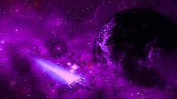

Введение
В этой книге изложено 78 основных принципов трансерфинга. Трансерфинг - это знание, дошедешее до нас из глубины тысячелетий.
Принципы
1. Пробуждение
Проснитесь здесь и сейчас. вам не кажется, что жизнь проходит, словно во сне, где не вы управляете реальностью, а она вами? Настало время вернуть себе прежнюю силу.
2. Взлом сновидения
Во сне вы находитесь во власти обстоятельств, потому что разум дремлет и безропотно принимает все как есть. Наяву происходит примерно то же самое.
3. Дитя Бога
В каждом из нас есть частица Бога. Вы - дитя Его. Ваше намерение - это намерение Бога. Как вы можете сомневаться, что оно будет исполнено?
4. Рождение звезды
Для того, чтобы добиться подлинного успеха, необходимо прекратить следовать общепринятым стандартам и отправиться своим путем.
5. Зеркало мира
Ваш мир есть то, что вы о нем думаете. Мир как зеркало отражает ваше отношение к нему. И если человек ждет всречи с недружелюбным окружением, его предчувствия сбываются. Однако стоит ему проникнуться невинной мыслью, что мир приберег для него все самое лучшее, как и это тоже срабатывает.
6. Бумеранг
Какие бы мысли мы ни посылали в мир, они вернутся к нам.